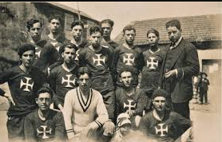
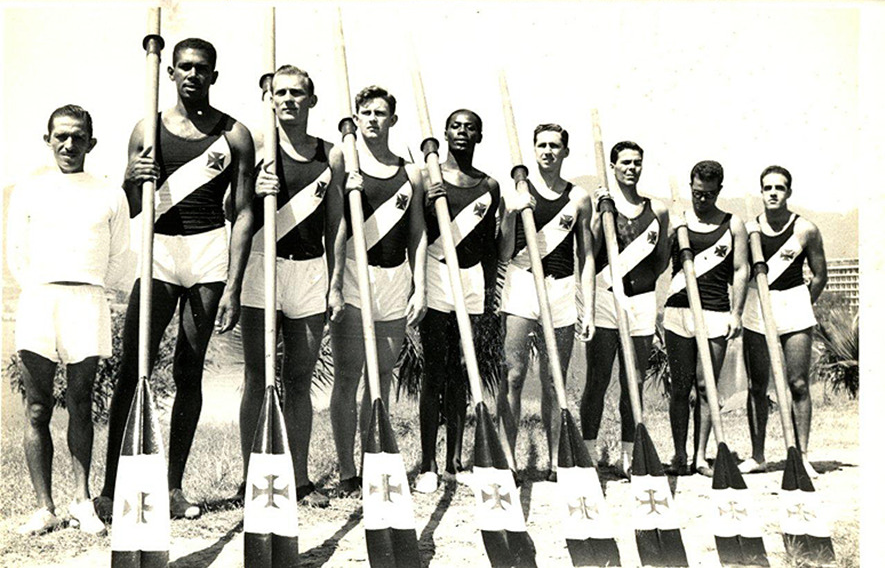
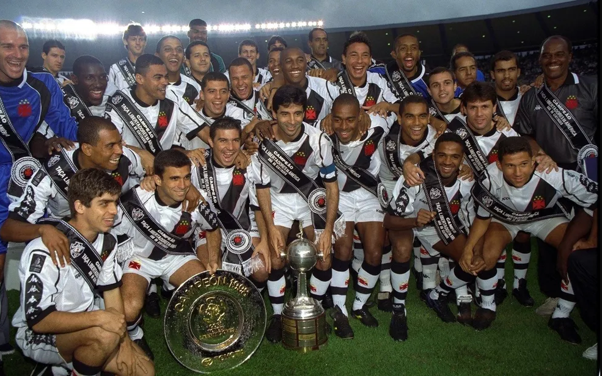

A RICA E GRANDIOSA HISTÓRIA DO CLUBE VASCO DA GAMA
  A história do Vasco da Gama é marcada por fatos que demonstram inegavelmente a disposição da agremiação vascaína, por intermédio dos seus dirigentes, associados e torcedores, para lutar contra males sociais que afligem a nossa sociedade, como o racismo, a homofobia e a transfobia. Está também gravado no espírito do Vasco da Gama o compromisso de combater as desigualdades sociais através de sua atuação no esporte e na sociedade. O lema “RESPEITO-IGUALDADE-INCLUSÃO” espelha um compromisso que não é apenas do Clube, mas de todos os vascaínos e vascaínas. O Vasco da Gama foi fundado no dia 21 de agosto de 1898. Surgia, então, uma instituição luso-brasileira constituída por homens simples, a sua maioria portugueses e brasileiros do comércio do Rio de Janeiro, mas com o brio e a bravura necessários para levar a recém-criada agremiação à tão almejada grandeza esportiva. À época, o Vasco era uma nova agremiação náutica dentre outras já existentes, mas seus criadores possuíam o objetivo de que se tornasse um Gigante. Desde o seu surgimento, a agremiação vascaína tem sido uma coletividade onde se juntam, onde se congregam, pessoas de todas as origens, sob uma mesma bandeira e símbolos, à sombra de um mesmo ideal: a grandeza do Vasco. No início do século XX, o Vasco da Gama tinha a maior parte dos seus atletas de remo oriundos das camadas populares, brasileiros e portugueses, em sua maioria empregados no comércio em postos de atendentes de balcão. De um modo geral, os sócios/atletas vascaínos eram enxergados pela elite dirigente da época como inaptos para a prática do esporte, por conta de sua origem e suas condições sociais. A evolução esportiva da agremiação vascaína, possível graças a participação desses “indesejáveis do remo” acolhidos pelo Vasco, incomodou aos poderosos. Porém, graças aos seus modestos e valorosos atletas, o C.R. Vasco da Gama conquistou, dentre outras glórias, o seu primeiro bicampeonato de remo da cidade do Rio de Janeiro (1905-1906). O Vasco alcançou inúmeras vitórias nesse esporte náutico e se tornou, ainda na segunda década do século passado, o clube mais vitorioso no remo da então capital do Brasil, sendo conhecido e reverenciado em todo país.